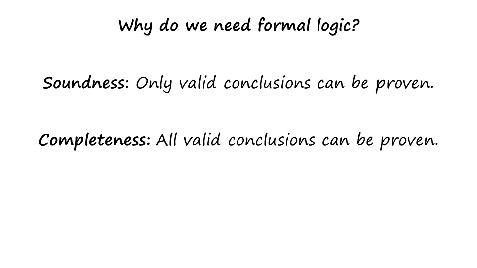

{kind=link}
If, dear Reader, you will faithfully observe these Rules, and so give my little book a really fair trial, I promise you, most confidently, that you will find Symbolic Logic to be one of the most, if not the most, fascinating of mental recreations! – Lewis Carroll, Introduction to Symbolic Logic.
Section 01: Preview¶
Today we’ll discuss logic. Logic is a formal language that allows us to make assertions about the world in a very precise way. We learn about logic both because it is an important topic and also because it forms the basis of additional topics such as planning. We’ll start talking about a formal notation for writing sentences in logic. This formal notation will have things like conjunctions and disjunctions. Then we’ll talk about truth tables, a topic that you probably already know. We’ll talk about rules of inferences like modus ponens and modus tollens. Finally we’ll discuss methods for proving theories [proving theorems by refutation] by repetition. One of those methods is called, resolution theorem proving.
Section 02: Why do we need Formal Logic?¶
{kind=link}
Let us begin by asking ourselves, why do we need use formal logic to design an AI agent? The way the formal logic in an AI agent would work is that there will be two parts to the AI agent. The first part of the agent will consist of a knowledge base. The knowledge will contain the agents knowledge all over the world. That knowledge will be represented in sentences in the language of logic. The second part will consist of an inference engine. The inference engine will apply rules of inference to the knowledge that the agent has. So remember again, two parts, the knowledge base and then rules of inference. Now there are certain situations in which we want the AI agent to be able to show, to be able to prove that the answers, that it derives to any problem in fact are provably correct. If we want to show this to itself, or to other users. In other situations, we may want the AI agent to generate only provably correct solutions. How can we guarantee that? Well we need two things. First, we need a complete and correct knowledge base. And second, we need rules of inference that will give guarantees of correctness of the answer. The inference then has two parts to it. The first part is called soundness. The property of soundness means that rules of inference will derive only those conclusions that are, in fact, valid. The second property is completeness. The property of completeness means that the [AI agent] will derive all of the valid conclusions. These are two very important properties to have. If an AI agent can use logical rules, logical rules of inference on its knowledge base and provide guaranteed soundness and completeness, then it’s a very useful thing for an AI agent to have. For this reason, logic has been an important part of AI since the inception of the field. In fact it continues to be an important part of research and modeling AI. In this course however we’ll discuss logic only to a very limited degree. There are two reasons for this. First, our priorities in this course are a little different. Instead of talking about knowledge in the form of logical sentences, we are much more interested in conceptual knowledge and experiential knowledge and heuristic knowledge. Second, recall that we said that a logic based agent has two parts to it, the knowledge base and the rules of inferences. Even if the rules of inferences are, in fact, guaranteed to be sound and complete, there is a problem about how do we construct a correct and complete knowledge base? If the knowledge base of an AI agent is not correct and complete, then it may not gave you useful answers, even if the roots of inference are sound and complete. Thus, in this course, we’ll use logic only to the degree to which it is useful for specifying other methods. Methods that use conceptual knowledge or experiential knowledge or heuristic knowledge.
Section 03: Inferences about Birds¶
Now we have come across this particular kind of problem earlier. This was a classification hierarchy. Vertebrates can be of different kinds. Bird is one kind. Birds can be a different kind. Eagle, bluebird, penguin are three classes of birds. Now imagine we have knowledge like, if an animal had feathers then it is a bird. When we’re discussing this classification hierarchy we had tried to define the concept of bird, and we had said at that time that if an animal has feathers it is a bird, and if an animal lays eggs and it flies then it’s a bird. It is sentences like this that we’ll try to put in the language of logic.
Section 04: Exercise: Inferences About Foos¶
Before we represent those sentences in the language of logic, let us consider another example of conceptual knowledge and its relationship to logic first. So here is a concept of four. We have come across this earlier. They were a block and a block and a brick at the bottom and a brick at the top. And some relationship between these objects. Given this conceptual knowledge about foo we can ask ourselves, what are the sufficient conditions for something to be a foo? Here are several choices. Please mark all of those choices that together make for sufficient conditions for the concept of foo.
-
Q-24: Which of these conditions imply that the object is a foo? Select all that apply.
- (A) A brick supports two bricks
- Check if a brick directly supports another brick.
- (B) A brick supports two blocks
- Correct!
- (C) Those two blocks touch
- Each block has a relation of 'not touches' with each other.
- (D) Those two blocks do not touch
- Correct!
- (E) Those two blocks support a block
- Check if a block supports a block.